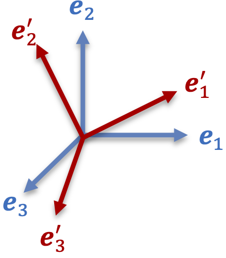
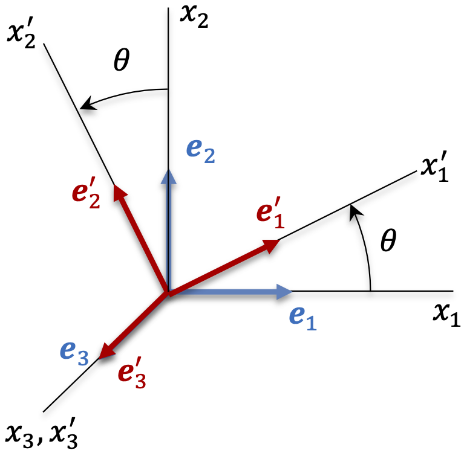

A.1 Second-Order Tensors¶
Definition¶
Let \(\mathbf{T}\) be a transformation, which transforms any vector into another vector, e.g.,
If \(\mathbf{T}\) has the following properties,
where \(\mathbf{a}\) and \(\mathbf{c}\) are arbitrary vectors, and \(\alpha\) is an arbitrary scalar, then \(\mathbf{T}\) is called a linear transformation, a second-order tensor, or simply a tensor. Vectors are first-order tensors and scalars are zeroth-order tensors.
Cartesian Components of a Tensor¶
Let \(\left\{ \mathbf{e}_{1},\mathbf{e}_{2},\mathbf{e}_{3}\right\}\) form an orthonormal basis in a Cartesian coordinate system \(x_{1},x_{2},x_{3}\). Then the Cartesian components of \(\mathbf{a}\) are
or equivalently,
(Recall that \(\mathbf{a}=a_{i}\mathbf{e}_{i}\), thus \(\mathbf{a}\cdot\mathbf{e}_{j}=a_{i}\mathbf{e}_{i}\cdot\mathbf{e}_{j}=a_{i}\delta_{ij}=a_{j}\).)
The Cartesian components of a tensor \(\mathbf{T}\) are obtained as follows. Let \(\mathbf{T}\cdot\mathbf{a}=\mathbf{b}\). The components of \(\mathbf{b}\) are given by \(b_{i}=\mathbf{e}_{i}\cdot\mathbf{b}=\mathbf{e}_{i}\cdot\mathbf{T}\cdot\mathbf{a}\). But \(\mathbf{a}=a_{j}\mathbf{e}_{j}\), so \(b_{i}=a_{j}\mathbf{e}_{i}\cdot\mathbf{T}\cdot\mathbf{e}_{j}\). Note that \(\mathbf{e}_{i}\cdot\mathbf{T}\cdot\mathbf{e}_{j}\) is the component along \(\mathbf{e}_{i}\) of the vector \(\mathbf{T}\cdot\mathbf{e}_{j}\). By convention, we denote this component as
components of tensor \(\mathbf{T}\).
Thus, \(\mathbf{b}=\mathbf{T}\cdot\mathbf{a}=a_{j}\mathbf{T}\cdot\mathbf{e}_{j}=b_{k}\mathbf{e}_{k}\). Taking the dot product on both sides with \(\mathbf{e}_{i}\) yields \(a_{j}\mathbf{e}_{i}\cdot\mathbf{T}\cdot\mathbf{e}_{j}=a_{j}T_{ij}=b_{k}\mathbf{e}_{i}\cdot\mathbf{e}_{k}=b_{k}\delta_{ik}=b_{i}\), or
in indicial form. In matrix form,
The matrix of tensor \(\mathbf{T}\) with respect to \(\left\{ \mathbf{e}_{1},\mathbf{e}_{2},\mathbf{e}_{3}\right\}\) can also be denoted by \(\left[\mathbf{T}\right]\) or \(\left[T_{ij}\right]\). The columns of \(\left[\mathbf{T}\right]\) are given by \(\mathbf{T}\cdot\mathbf{e}_{i}\), e.g.,
This result, when generalized, leads to the useful identity
Example 1. Scaling transformation
A scaling transformation \(\mathbf{T}\) with different scale factors along \(x_{1},x_{2},x_{3}\) should satisfy the following relations by definition:
Verify that \(\mathbf{T}\) is a tensor. Also find the matrix of \(\mathbf{T}\) in \(\left\{ \mathbf{e}_{1},\mathbf{e}_{2},\mathbf{e}_{3}\right\}\).
Solution. Is \(\mathbf{T}\) a tensor? Let any \(\mathbf{a}=a_{i}\mathbf{e}_{i}\) and \(\mathbf{b}=b_{i}\mathbf{e}_{i}\), then
and
Now that we have demonstrated that \(\mathbf{T}\) is a tensor, its components are given by \(T_{ij}=\mathbf{e}_{i}\cdot\mathbf{T}\cdot\mathbf{e}_{j}\), thus
Then, the matrix of \(\mathbf{T}\) is given by
Sum of Tensors¶
The sum of two tensors \(\mathbf{T}\) and \(\mathbf{S}\) is denoted by \(\mathbf{T}+\mathbf{S}\) and defined by
for any vector \(\mathbf{a}\). Thus \(\mathbf{T}+\mathbf{S}\) is also a tensor, whose components are
In matrix notation, \(\left[\mathbf{T}+\mathbf{S}\right]=\left[\mathbf{T}\right]+\left[\mathbf{S}\right]\).
Dyadic Product of Vectors¶
The dyadic product of two vectors \(\mathbf{a}\) and \(\mathbf{b}\) is denoted by \(\mathbf{a}\otimes\mathbf{b}\) (or \(\mathbf{ab}\)) and defined as the transformation which satisfies
For any \(\mathbf{c}\), \(\mathbf{d}\), \(\alpha\) and \(\beta\), we have
thus \(\mathbf{a}\otimes\mathbf{b}\) is a tensor. Its Cartesian components with respect to \(\left\{ \mathbf{e}_{1},\mathbf{e}_{2},\mathbf{e}_{3}\right\}\) are
In matrix form,
Note that in general, \(\mathbf{a}\otimes\mathbf{b}\ne\mathbf{b}\otimes\mathbf{a}\), i.e., the dyadic product is not commutative. Also note that
thus it is possible to represent a second-order tensor in terms of its Cartesian components in \(\left\{ \mathbf{e}_{1},\mathbf{e}_{2},\mathbf{e}_{3}\right\}\) as \(\mathbf{T}=T_{11}\mathbf{e}_{1}\otimes\mathbf{e}_{1}+T_{12}\mathbf{e}_{1}\otimes\mathbf{e}_{2}+T_{13}\mathbf{e}_{1}\otimes\mathbf{e}_{3}+\ldots+T_{33}\mathbf{e}_{3}\otimes\mathbf{e}_{3}\), or
This turns out to be an important result that can be generalized to higher order tensors, e.g., third-order tensors can be represented in terms of their Cartesian components as \(\mathbb{T}=T_{ijk}\mathbf{e}_{i}\otimes\mathbf{e}_{j}\otimes\mathbf{e}_{k}\), and similarly for higher orders.
Example 2. The scaling transformation derived in a previous example can be represented as
Trace of a Second-Order Tensor¶
The trace of any dyad \(\mathbf{a}\otimes\mathbf{b}\) is defined by
and
The trace operator yields a scalar function. In component form,
For any tensor \(\mathbf{T}\), we can write \(\mathbf{T}=T_{ij}\mathbf{e}_{i}\otimes\mathbf{e}_{j}\), thus
The trace of a tensor is the sum of its diagonal components.
Product of Two Tensors¶
The products of two tensors \(\mathbf{T}\) and \(\mathbf{S}\) are denoted by \(\mathbf{T}\cdot\mathbf{S}\) and \(\mathbf{S}\cdot\mathbf{T}\) and defined respectively by
and
Clearly, \(\mathbf{T}\cdot\mathbf{S}\) and \(\mathbf{S}\cdot\mathbf{T}\) are tensors as well. Their components in \(\left\{ \mathbf{e}_{1},\mathbf{e}_{2},\mathbf{e}_{3}\right\}\) are given by
In matrix form, \(\left[\mathbf{T}\cdot\mathbf{S}\right]=\left[\mathbf{T}\right]\left[\mathbf{S}\right]\). Similarly,
In general, \(\mathbf{T}\cdot\mathbf{S}\ne\mathbf{S}\cdot\mathbf{T}\), however \(\left(\mathbf{T}\cdot\mathbf{S}\right)\cdot\mathbf{V}=\mathbf{T}\cdot\left(\mathbf{S}\cdot\mathbf{V}\right)\), i.e., the tensor product is associative but not commutative.
Identity Tensor and Tensor Inverse¶
The identity tensor, denoted by \(\mathbf{I}\), is defined by
for any vector \(\mathbf{a}\). The Cartesian components o f \(\mathbf{I}\) in \(\left\{ \mathbf{e}_{1},\mathbf{e}_{2},\mathbf{e}_{3}\right\}\) are given by
or
Given \(\mathbf{T}\), if \(\mathbf{S}\) exists such that \(\mathbf{S}\cdot\mathbf{T}=\mathbf{I}\), we call \(\mathbf{S}\) the inverse of \(\mathbf{T}\), and \(\mathbf{S}=\mathbf{T}^{-1}\). The inverse exists as long as \(\det\mathbf{T}\neq0\). Also note that \(\left(\mathbf{T}^{-1}\right)^{-1}=\mathbf{T}\) and \(\mathbf{T}^{-1}\cdot\mathbf{T}=\mathbf{T}\cdot\mathbf{T}^{-1}=\mathbf{I}\). Also note that
Transpose of a Tensor¶
Given a tensor \(\mathbf{T}\), its transpose is denoted by \(\mathbf{T}^{T}\) which is defined by
In component form,
Also note that
and \(\left(\mathbf{S}^{T}\right)^{T}=\mathbf{S}\) and\(\left(\mathbf{S}+\mathbf{T}\right)^{T}=\mathbf{S}^{T}+\mathbf{T}^{T}\).
Double Product of Tensors¶
The double product of tensors is analogous to the dot product of vectors. Given two tensors \(\mathbf{S}\) and \(\mathbf{T}\), the double product (or double contraction) is defined as
Thus, for any tensor \(\mathbf{T}\), \(\tr\mathbf{T}=\mathbf{I}:\mathbf{T}\). In component form,
The double product of second order tensors is commutative.
Example 3. Show that \(\mathbf{a}\cdot\mathbf{T}\cdot\mathbf{b}=\mathbf{T}:\left(\mathbf{a}\otimes\mathbf{b}\right)\) and \(\left(\mathbf{a}\otimes\mathbf{b}\right):\left(\mathbf{c}\otimes\mathbf{d}\right)=\left(\mathbf{a}\cdot\mathbf{c}\right)\left(\mathbf{b}\cdot\mathbf{d}\right)\).
Using indicial notation,
and
Determinant of a Tensor¶
The determinant of a tensor is equal to the determinant of its components in \(\left\{ \mathbf{e}_{1},\mathbf{e}_{2},\mathbf{e}_{3}\right\}\),
In particular, the determinant of a diagonal matrix is the product of the diagonal components,
The determinant satisfies the following relations,
Orthogonal Tensor¶
An orthogonal tensor \(\mathbf{Q}\) is a linear transformation which preserves the length of a vector and the angle between vectors. Thus, by definition,
for any vectors \(\mathbf{a}\) and \(\mathbf{b}\). It follows from this definition and the definition of the dot product of vectors (\(\mathbf{a}\cdot\mathbf{b}=\left|\mathbf{a}\right|\left|\mathbf{b}\right|\cos\left(\mathbf{a},\mathbf{b}\right))\), that
But \(\left(\mathbf{Q}\cdot\mathbf{a}\right)\cdot\left(\mathbf{Q}\cdot\mathbf{b}\right)=\mathbf{b}\cdot\left(\mathbf{Q}^{T}\cdot\mathbf{Q}\right)\mathbf{a}=\mathbf{a}\cdot\mathbf{b}=\mathbf{b}\cdot\mathbf{I}\cdot\mathbf{a}\), which implies that \(\mathbf{b}\cdot\left(\mathbf{Q}^{T}\cdot\mathbf{Q}-\mathbf{I}\right)\cdot\mathbf{a}=0\). Since \(\mathbf{a}\) and \(\mathbf{b}\) are arbitrary, an orthogonal tensor must satisfy \(\mathbf{Q}^{T}\cdot\mathbf{Q}=\mathbf{I}\). In indicial form, \(Q_{im}^{T}Q_{mj}=Q_{mi}Q_{mj}=\delta_{ij}\), and in matrix form, \(\left[\mathbf{Q}\right]^{T}\left[\mathbf{Q}\right]=\left[\mathbf{I}\right]\).
Note that \(\mathbf{Q}^{T}\cdot\mathbf{Q}=\mathbf{I}\) implies that \(\mathbf{Q}^{T}=\mathbf{Q}^{-1}\), i.e., the transpose of an orthogonal tensor is equal to its inverse, since \(\mathbf{Q}^{-1}\cdot\mathbf{Q}=\mathbf{Q}\cdot\mathbf{Q}^{-1}=\mathbf{I}\). It follows that
The determinant of an orthogonal tensor is given by
Here, \(\left\{ \mathbf{e}'_{1},\mathbf{e}'_{2},\mathbf{e}'_{3}\right\}\) is the orthonormal basis resulting from the transformation of \(\left\{ \mathbf{e}_{1},\mathbf{e}_{2},\mathbf{e}_{3}\right\}\) by \(\mathbf{Q}\). If \(\mathbf{Q}\) maintains the handedness of \(\left\{ \mathbf{e}_{1},\mathbf{e}_{2},\mathbf{e}_{3}\right\}\) (e.g., if both \(\left\{ \mathbf{e}_{1},\mathbf{e}_{2},\mathbf{e}_{3}\right\}\) and \(\left\{ \mathbf{e}'_{1},\mathbf{e}'_{2},\mathbf{e}'_{3}\right\}\) form a right-handed basis), then \(\det\mathbf{Q}=+1\) and \(\mathbf{Q}\) is called a proper orthogonal transformation (also equivalent to a rigid body rotation). Otherwise, in the case of a reflection which reverses the handedness of the basis vectors, \(\det\mathbf{Q}=-1\) and \(\mathbf{Q}\) is called improper (e.g., \(\mathbf{e}'_{1}=\mathbf{e}_{1},\,\mathbf{e}'_{2}=-\mathbf{e}_{2},\,\mathbf{e}'_{3}=\mathbf{e}_{3}\)).
Transformation Laws for Cartesian Components of Vectors and Tensors¶

Figure 1. Orthonormal bases \(\left\{ \mathbf{e}_{1},\mathbf{e}_{2},\mathbf{e}_{3}\right\}\) and \(\left\{ \mathbf{e}'_{1},\mathbf{e}'_{2},\mathbf{e}'_{3}\right\}\).
Let \(\left\{ \mathbf{e}_{1},\mathbf{e}_{2},\mathbf{e}_{3}\right\}\) and \(\left\{ \mathbf{e}'_{1},\mathbf{e}'_{2},\mathbf{e}'_{3}\right\}\) be two orthogonal bases in a Cartesian coordinate system. \(\left\{ \mathbf{e}_{1},\mathbf{e}_{2},\mathbf{e}_{3}\right\}\) could be made to coincide with \(\left\{ \mathbf{e}'_{1},\mathbf{e}'_{2},\mathbf{e}'_{3}\right\}\) through a rigid body rotation (i.e., a transformation that preserves vector length and angles),
where \(Q_{mi}Q_{mj}=Q_{im}Q_{jm}=\delta_{ij}\). Since \(Q_{mi}=\mathbf{e}_{m}\cdot\mathbf{Q}\cdot\mathbf{e}_{i}=\mathbf{e}_{m}\cdot\mathbf{e}'_{i}=\cos\left(\mathbf{e}_{m},\mathbf{e}'_{i}\right)\), the components of \(\mathbf{Q}\) are direction cosines between \(\mathbf{e}_{m}\) and \(\mathbf{e}'_{i}\).
Example 4. Rotation about \(x_{3}\)

Figure 2. Rotation about \(x_{3}\).
Reflection about \(x_{2}-x_{3}\) plane, \(\mathbf{e}'_{1}=\mathbf{Q}\cdot\mathbf{e}_{1}=-\mathbf{e}_{1},\,\mathbf{e}'_{2}=\mathbf{Q}\cdot\mathbf{e}_{2}=\mathbf{e}_{2},\,\mathbf{e}'_{3}=\mathbf{Q}\cdot\mathbf{e}_{3}=\mathbf{e}_{3}\).
For any vector \(\mathbf{a}\), its components with respect to \(\left\{ \mathbf{e}_{1},\mathbf{e}_{2},\mathbf{e}_{3}\right\}\) and \(\left\{ \mathbf{e}'_{1},\mathbf{e}'_{2},\mathbf{e}'_{3}\right\}\) are \(a_{i}=\mathbf{e}_{i}\cdot\mathbf{a}\) and \(a'_{i}=\mathbf{e}'_{i}\cdot\mathbf{a}\), respectively. Using the above relation,
or
In matrix form,
or
Here \(\left[\mathbf{a}\right]^{\prime}\) and \(\left[\mathbf{a}\right]\) are matrices of the same vector, expressed in two different coordinate systems. This is not the same as \(\mathbf{a}'=\mathbf{Q}^{T}\cdot\mathbf{a}\), where \(\mathbf{a}'\) is the linear transformation of \(\mathbf{a}\) by \(\mathbf{Q}^{T}\).
Now consider a tensors \(\mathbf{T}\). Its components with respect to \(\left\{ \mathbf{e}_{1},\mathbf{e}_{2},\mathbf{e}_{3}\right\}\) and \(\left\{ \mathbf{e}'_{1},\mathbf{e}'_{2},\mathbf{e}'_{3}\right\}\) are given by \(T_{ij}=\mathbf{e}_{i}\cdot\mathbf{T}\cdot\mathbf{e}_{j}\) and \(T'_{ij}=\mathbf{e}'_{i}\cdot\mathbf{T}\cdot\mathbf{e}'_{j}\), respectively. Thus, \(T'_{ij}=\left(\mathbf{Q}\cdot\mathbf{e}_{i}\right)\cdot\mathbf{T}\cdot\left(\mathbf{Q}\cdot\mathbf{e}_{j}\right)=Q_{mi}\mathbf{e}_{m}\cdot\mathbf{T}\cdot Q_{nj}\mathbf{e}_{n}=Q_{mi}Q_{nj}\mathbf{e}_{m}\cdot\mathbf{T}\cdot\mathbf{e}_{n}=Q_{mi}Q_{nj}T_{mn}\), or
In matrix form, \(\left[\mathbf{T}\right]^{\prime}=\left[\mathbf{Q}\right]^{T}\left[\mathbf{T}\right]\left[\mathbf{Q}\right]\), or
Equivalently, we can show that
or \(\left[\mathbf{T}\right]=\left[\mathbf{Q}\right]\left[\mathbf{T}\right]^{\prime}\left[\mathbf{Q}\right]^{T}\). As for vectors, we note that \(\left[\mathbf{T}\right]\) and \(\left[\mathbf{T}\right]^{\prime}\) are the matrices of the same tensor \(\mathbf{T}\), with respect to two different coordinate systems. This is not the same as \(\mathbf{T}'=\mathbf{Q}^{T}\cdot\mathbf{T}\cdot\mathbf{Q}\).
Symmetric and Antisymmetric Tensors¶
A symmetric tensor \(\mathbf{T}\) satisfies \(\mathbf{T}^{T}=\mathbf{T}\), i.e., \(T_{ji}=T_{ij}\), or in matrix form,
An antisymmetric (or skew-symmetric) tensor \(\boldsymbol{\Omega}\) satisfies \(\boldsymbol{\Omega}^{T}=-\boldsymbol{\Omega}\), i.e., \(\Omega_{ji}=-\Omega_{ij}\) and thus \(\Omega_{11}=\Omega_{22}=\Omega_{33}=0\),
Any tensor can be written as the sum of a symmetric and antisymmetric tensor,
This is a unique decomposition. It can be checked that \(\mathbf{T}^{S}\) is symmetric and \(\mathbf{T}^{A}\) is antisymmetric.
The dual vector \(\boldsymbol{\omega}\) of an antisymmetric tensor \(\boldsymbol{\Omega}\) satisfies
for any vector \(\mathbf{a}\). Thus \(\Omega_{ij}=\mathbf{e}_{i}\cdot\boldsymbol{\Omega}\cdot\mathbf{e}_{j}=\mathbf{e}_{i}\cdot\left(\boldsymbol{\omega}\times\mathbf{e}_{j}\right)=\omega_{k}\mathbf{e}_{i}\cdot\left(\mathbf{e}_{k}\times\mathbf{e}_{j}\right)=\omega_{k}\mathbf{e}_{i}\cdot\varepsilon_{kjl}\mathbf{e}_{l}=\omega_{k}\varepsilon_{kjl}\delta_{il}\) or
In matrix form,
Conversely, it can also be shown that
As a homework problem, it may be shown that \(\varepsilon_{ijk}T_{jk}=\varepsilon_{ijk}T_{jk}^{A}\), since \(\varepsilon_{ijk}T_{jk}^{S}=0\) for any symmetric tensor \(\mathbf{T}^{S}\).
Eigenvalues and Eigenvectors of Real Symmetric Tensors¶
A second-order tensor \(\mathbf{T}\) has three pairs of eigenvalues \(\lambda\) and eigenvectors \(\mathbf{v}\) that each satisfy
The eigenvalues \(\lambda\) are the roots of the characteristic equation of \(\mathbf{T}\), which is the cubic polynomial produced by setting \(\det\left(\mathbf{T}-\lambda\mathbf{I}\right)=0\),
where
are called invariants of \(\mathbf{T}\).
According to the Cayley-Hamilton theorem, a tensor \(\mathbf{T}\) satisfies its own characteristic equation,
Therefore, the cubic power of \(\mathbf{T}\) can be expressed in terms of its lower powers according to \(\mathbf{T}^{3}=I_{1}\mathbf{T}^{2}-I_{2}\mathbf{T}+I_{3}\mathbf{I}\). Taking the trace of this equation allows us to solve for \(I_{3}\) as
Multiplying eq.\eqref{eq:Cayley-Hamilton-theorem} by \(\mathbf{T}^{-1}\) also produces
Using all these relations, we may differentiate the three invariants of \(\mathbf{T}\) with respect to \(\mathbf{T}\) to get
Theorem. The eigenvalues of real symmetric tensors are real (proof not provided here).
Theorem. If the eigenvalues of a real symmetric tensor are all distinct, the eigenvectors are orthogonal to each other.
Proof: Given \(\mathbf{T}\cdot\mathbf{v}_{1}=\lambda_{1}\mathbf{v}_{1}\), \(\mathbf{T}\cdot\mathbf{v}_{2}=\lambda_{2}\mathbf{v}_{2}\), \(\lambda_{1}\ne\lambda_{2}\), then \(\mathbf{v}_{2}\cdot\mathbf{T}\cdot\mathbf{v}_{1}=\lambda_{1}\mathbf{v}_{1}\cdot\mathbf{v}_{2}\) and \(\mathbf{v}_{1}\cdot\mathbf{T}\cdot\mathbf{v}_{2}=\lambda_{2}\mathbf{v}_{1}\cdot\mathbf{v}_{2}=\mathbf{v}_{2}\cdot\mathbf{T}^{T}\cdot\mathbf{v}_{1}=\mathbf{v}_{2}\cdot\mathbf{T}\cdot\mathbf{v}_{1}\),
When two of the eigenvalues are repeated (a double root of the characteristic equation), the resulting eigenvectors are not necessarily orthogonal to each other; however, they remain orthogonal to the third eigenvector. This means that any vector lying in the plane normal to the third eigenvector is an eigenvector corresponding to the double root. Similarly, when all three eigenvalues are repeated (a triple root), any vector becomes an eigenvector of \(\mathbf{T}\).
Example 5. In hydrostatics the stress tensor is \(\mathbf{T}=-p\mathbf{I}\), where \(p\) is the hydrostatic pressure. In this case, \(-p\) is a triple root of the characteristic equation of \(\mathbf{T}\). Any vector \(\mathbf{v}\) satisfies \(\mathbf{T}\cdot\mathbf{v}=-p\mathbf{v}\), and is thus an eigenvector of \(\mathbf{T}\).
In continuum mechanics the eigenvectors \(\mathbf{v}\) of a tensor are generally normalized,
Thus, we can always find a set of three orthonormal eigenvectors \(\left\{ \mathbf{n}_{1},\mathbf{n}_{2},\mathbf{n}_{3}\right\}\) for any real symmetric tensor \(\mathbf{T}\), even when the eigenvalues are repeated. Given a tensor \(\mathbf{T}\) with eigenvalues \(\lambda_{1},\lambda_{2},\lambda_{3}\) and eigenvectors \(\mathbf{n}_{1},\mathbf{n}_{2},\mathbf{n}_{3}\), the components of \(\mathbf{T}\) in the orthonormal basis \(\left\{ \mathbf{n}_{1},\mathbf{n}_{2},\mathbf{n}_{3}\right\}\) can be obtained from
Thus,
Since \(\mathbf{T}=T_{ij}\mathbf{n}_{i}\otimes\mathbf{n}_{j}=T_{i1}\mathbf{n}_{i}\otimes\mathbf{n}_{1}+T_{i2}\mathbf{n}_{i}\otimes\mathbf{n}_{2}+T_{i3}\mathbf{n}_{i}\otimes\mathbf{n}_{3}\), we find that
This is known as the spectral representation of the tensor \(\mathbf{T}\). In particular, since the eigenvalues of the identity tensor are \(\lambda_{1}=\lambda_{2}=\lambda_{3}=1\), and since any vector is an eigenvector of \(\mathbf{I}\), we can select the basis vectors \(\mathbf{e}_{1},\,\mathbf{e}_{2},\,\mathbf{e}_{3}\) so that the spectral representation of \(\mathbf{I}\) may be given by
Orthogonal Transformation of Tensors¶
An orthogonal transformation \(\mathbf{Q}\) transforms any vector \(\mathbf{a}\) into the vector \(\mathbf{Q}\cdot\mathbf{a}\), which we may denote as
Recall that a tensor \(\mathbf{T}\) may be expressed in its spectral representation as per eq.\eqref{eq:eigen-spectral-rep}. Each of its eigenvectors \(\mathbf{n}\) is transformed by \(\mathbf{Q}\) into \(\mathbf{n}^{*}=\mathbf{Q}\cdot\mathbf{n}\). Since eigenvalues of \(\mathbf{T}\) are invariant to orthogonal transformations, it follows that
Thus, the transformation of the second-order tensor \(\mathbf{T}\) by \(\mathbf{Q}\) is \(\mathbf{T}^{*}=\mathbf{Q}\cdot\mathbf{T}\cdot\mathbf{Q}^{T}\).